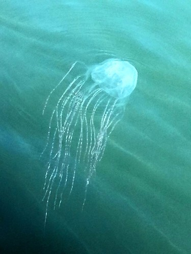
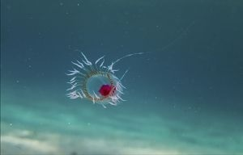
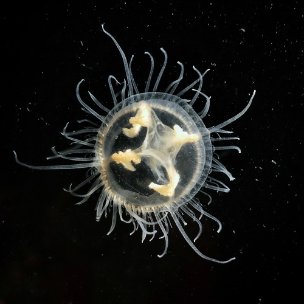
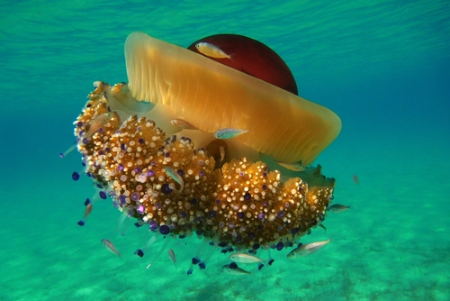

Talířovka ušatá
Aurelia aurita
Nejrozšířenější medúza světa. Žije ve všech oceánech a díky nenáročnosti se stala modelovým organismem vědy — většina toho, co víme o medúzách, pochází z výzkumu právě tohoto druhu.

Čtyřhranka smrtelná
Chironex fleckeri
Nejjedovatější mořský živočich světa. Jediný jedinec nese dost jedu k usmrcení 60 lidí. V sezóně jsou australské pláže z tohoto důvodu uzavřeny.

Nesmrtelná medúza
Turritopsis dohrnii
Jediný živočich, který se dokáže vrátit v čase. Po rozmnožení nebo poranění se transformuje zpět do stádia polypa. Biologicky nesmrtelná — tento cyklus může opakovat donekonečna.

Medúzka sladkovodní
Craspedacusta sowerbyi
Jediná sladkovodní medúza světa — a žije i u nás. Pochází z Číny, do Evropy se dostala s akvarijními rostlinami. Dorůstá jen 2,5 cm a většinu času tráví jako polyp na dně řek a rybníků.

Talířovka středomořská
Cotylorhiza tuberculata
Přezdívá se jí "smažené vejce". Ve svých tkáních hostí fotosyntetické řasy, které jí dodávají energii — stejný princip jako u korálů. Žahnutí je pro člověka prakticky nebolestivé.
ŽAHAVCI
Cnidaria
Korálnatci
Anthozoa · ~7 200 druhů
Šestičetní
Hexacorallia
~4 300 druhů
Zástupci a zajímavost→
Osmičetní
Octocorallia
~3 000 druhů
Zástupci a zajímavost→
Žijí pouze jako polypi —
stádium medúzy nevytváří
stádium medúzy nevytváří
Medusozoa
~3 900 druhů
★
Medúzovci
Scyphozoa
~200 druhů
Zástupci a zajímavost→
Polypovci
Hydrozoa
~3 700 druhů
Zástupci a zajímavost→
Čtyřhranky
Cubozoa
~50 druhů
Zástupci a zajímavost→
Kalichovky
Staurozoa
~50 druhů
Zástupci a zajímavost→
Mají ve svém životním cyklu stádium medúzy
★
druh chovaný v ZOO Mořský svět Praha
Žahavci se na Zemi objevili před více než 600 miliony let — přežili všech pět hromadných vymírání
Foto zástupce
bude doplněno
bude doplněno
✕
Medúzy světa
←
→
✕